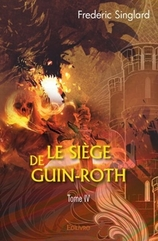

Le premier langage parlé à Namïamur fut "l'Ondousel", élaboré par le Seigneur Mazdâ lui-même en collaboration avec les Monts de l'Aleuïa, protecteurs de l'Île à l'époque du Premier Âge, entre l'An 25 et 32.
Les Valandims et les Trolls furent les premiers à en bénéficier et le dialecte prospéra durant les années suivantes. Le Roi Nuala inventa lui aussi son propre système de communication, "l"Anirir", dont les traces furent perdues après le démantèlement des armées.
En 348, les premiers Hommes imposèrent une nouvelle mouture. La langue se vit remaniée, certains mots demeurèrent identiques tandis que d'autres connurent d'importantes mutations selon les évolutions culturelles et sociologiques.
C'est alors que "l'Ondurel" vit le jour, une version simplifiée de la langue originelle, et devint le principal canal d'échange des Filisiens pour les actes officiels, diplomatiques et commerciaux. L'ancienne langue demeura cependant majoritaire au niveau de la liturgie et de la littérature savante. Elle fut encore enseignée et représenta la moitié des ouvrages de la Bibliothèque au cours des siècles suivants, ce qui n'empêcha pas le développement de dialectes locaux, mais en nombre limité compte tenu du regroupement des Hommes à la citadelle de Filis, au sud ouest de Namïamur.
Avec la formation des Moines d'Anphazar du Maître Gon Mertault, en 409, de nouveaux langages apparurent, codés et seulement inculqués aux fidèles pour l'écriture des messages secrets mais, en général, les Gardiens du Temple utilisèrent "l'Ondousel", notamment pour la rédaction de la prophétie des quatre magiciens. Gandor Dinarlog, qui venait du Royaume des Aigles d'Edard Ier, s'exprimait quant à lui essentiellement par la transmission de sa pensée en fusionnant son regard avec celui de son interlocuteur. Par ses visions de l'avenir, il compléta la première ébauche de la prédiction en y intégrant un système correspondant aux noms des futurs Sorciers. Les Moines retranscrivirent ces informations en les gravant sur le mur du sanctuaire du Dolos.
A l'époque de l'Inquisiteur de Namïamur, en 895 du Premier Âge, le souverain Rogan Hirnon cadenassa l'accès au savoir en le confiant à une certaine élite pour affirmer son pouvoir. Il fit notamment détruire une partie des ouvrages en ancien langage au cours de plusieurs autodafés. Par ailleurs il est intéressant de noter que le manuscrit retrouvé par le Sorcier d'Agna-Dil, celui qui le guida vers les fragments de la Couronne de Nuala, devait lui aussi disparaître, mais il en fut autrement. Abordons maintenant quelques précisions linguistiques sur l'ancien Namïamurien, "l'Ondousel".